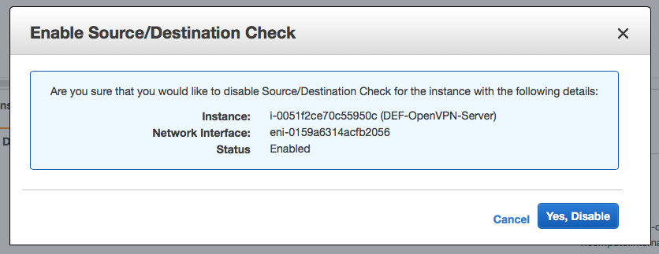
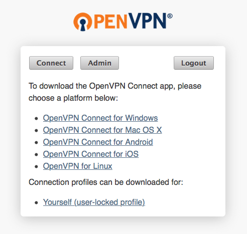

AWS-Konfigurationen
AWS-Account einrichten
Ein neuer AWS-Account kann unter folgendem Link erstellt werden. Für die Registrierung wird eine gültige E-Mail-Adresse sowie eine Kreditkarte benötigt. Um die Registrierung erfolgreich abzuschließen, muss den Anweisungen auf der Webseite gefolgt werden.
Um die weiteren Konfigurationen vornehmen zu können, muss ein erfolgreicher Login mit den definierten Login-Daten erfolgen.
IAM-Einstellungen vornehmen
Das AWS Identity and Access Management (IAM) wird für die sichere Verwaltung von Zugriffen auf AWS-Services und -Ressourcen verwendet. Genauere Informationen dazu können hier gefunden werden.
Nach dem erfolgreichen Login erscheint das Benutzer-Dashboard mit einem Suchfeld, wie in der folgenden Abbildung zu sehen ist. In dieses Suchfeld muss "IAM" eingetippt werden. Um den IAM-Service zu öffnen, muss auf den erscheinenden Vorschlag getippt werden.
Der IAM-Service kann auch durch Klicken auf "Services" in der Menüleiste am oberen Browser-Rand und anschließende Auswahl von "IAM" in der Kategorie "Security, Identity & Compliance" geöffnet werden.
Die Startseite des IAM-Service sieht folgendermaßen aus:
Der erste Schritt ist das Erstellen einer neuen IAM-Gruppe. Dies kann in der Gruppen-Übersicht gemacht werden, die über den Menüpunkt "Groups" in der Menüleiste am linken Browser-Rand erreichbar ist.
Durch Klicken auf den "Create New Group"-Button öffnet sich ein Wizard, mit desssen Hilfe eine neue Gruppe erzeugt werden kann. Hier kann zunächst der Name für die IAM-Gruppe definiert werden.
In der rechten unteren Ecke befindet sich der "Next Step"-Button, mit dem zum nächsten Schritt gewechselt werden kann. Hier kann eine Policy zur Gruppe hinzugefügt werden. Es soll hier nichts ausgewählt werden, sondern wieder auf den "Next Step"-Button geklickt werden.
Der letzte Schritt ist die Review, bei der die getroffenen Einstellung noch einmal betrachtet werden können.
In unserem Fall wurde nur der Gruppen-Name gesetzt. Durch Klicken auf "Create Group" wird die IAM-Gruppe erzeugt und in der Gruppen-Übersicht aufgelistet.
Als nächstes muss einen Policy erzeugt werden, die definiert, welche Handlungen erlaubt sind und welche nicht, und zu der neu erstellten Gruppe hinzugefügt werden. Dafür muss auf den Eintrag der neuen Gruppe in der Liste geklickt werden, sodass sich die Gruppen-Details öffnen. Im Tab "Permissions" unter "Inline Policies" kann eine neue Policy erzeugt werden, in dem auf den "click here"-Link gedrückt wird.

Es öffnet sich eine Seite, über die ausgewählt werden kann, wie die Policy erzeugt werden soll. Hier muss "Custom Policy" ausgewählt und auf "Select" gedrückt werden.
Nun muss der Name der Policy und die Policy selbst definiert werden. Dafür muss folgender Code in das Feld "Policy Document" kopiert werden.
{
"Version": "2012-10-17",
"Statement": [
{
"Sid": "Stmt1528103945000",
"Effect": "Allow",
"Action": [
"ec2:AuthorizeSecurityGroupIngress",
"ec2:CreateSecurityGroup",
"ec2:DescribeSecurityGroups",
"ec2:RevokeSecurityGroupIngress",
"ec2:RunInstances",
"ec2:DescribeInstances",
"ec2:DescribeInstanceStatus",
"ec2:TerminateInstances"
],
"Resource": "*"
}
]
}
Anschließend muss auf "Validate Policy" am unteren Browser-Rand geklickt werden, um festzustellen, ob die Policy fehlerfrei definiert wurde. Das Ergebnis der Validierung wird über dem Namen der Policy dargestellt.
Wurde die Policy erfolgreich validiert, kann "Apply Policy" ausgeführt werden. In der Detail-Ansicht der Gruppe ist die neu definierte Policy nun aufgelistet.
Der letzte Schritt ist nun das Erstellen eines neuen Users. Dafür muss in der Menüleiste links der Menüpunkt "Users" ausgewählt werden. Es erscheint eine Übersicht aller vorhandenen User.
Durch Klicken auf "Add user" öffnet sich ein Wizard, über den ein neuer User erstellt werden kann. Hier kann der Name des neuen Users eingegeben und definiert werden, welchen Zugriff der User bekommen soll. Biem "Access type" muss "Programmatic access" ausgewählt werden.
Durch Klicken auf "Next: Permissions" kann zum nächsten Schritt gewechselt werden. Hier muss ausgewählt werden, dass der neue User zur zuvor erstellten Gruppe hinzugefügt werden soll.
Wurde dies gemacht, kann auf "Next: Review" geklickt werden. Hier werden die getroffenen Einstellungen noch einmal dargestellt, die folgendermaßen aussehen sollten:
Nachdem auf "Create User" geklickt wurde, wird der neue User erzeugt. Dies wird über eine Status-Meldung angezeigt. Der neu erstellte User bekommt automatisch einen Access Key zugewiesen, der aus einer "Access key ID" und einem "Secret access key" besteht. Es ist wichtig, dass über den Button "Download .csv", der sich unter der Erfolgsmeldung befindet, dieser Access Key heruntergeladen wird, denn diese Zugangsdaten werden benötigt, um Zugriff auf das AWS zu bekommen. Diese Daten werden von AWS beim User NICHT hinterlegt, d.h. werden die Zugangsdaten verloren, kann über diesen User nicht mehr auf das AWS zugegriffen werden. Diese Zugangsdaten werden später für das Konfigurieren der AWS-Cloud als DEF-Cluster benötigt.
Der neu erstellte User wird nun in der User-Übersicht aufgelistet.
Damit wurden alle Einstellungen vorgenommen, die im IAM-Service notwendig waren.
Virtual Private Cloud (VPC) erstellen
Als nächstes muss eine Virtual Private Cloud (VPC) erstellt werden, in der die DEF-Instanzen gestartet werden können. Dafür gibt es den VPC-Service, der über Klicken des Menüpunkts "Services" in der oberen Menüleiste und dann Auswahl von "VPC" in der Kategorie "Networking & Content Delivery" erreicht werden kann.
Das VPC-Dashboard bietet einen Übersicht über alle Bereiche, die über den VPC-Service konfiguriert werden können.
Um eine VPC zu erzeugen, wird eine Elastic IP benötigt. Diese kann im Menüpunkt "Elastic IPs" in der Menüleiste am linken Browser-Rand erstellt werden. Die Übersicht zeigt alle Elastic IPs, die aktuell exisitieren. Um eine neue Adresse zu allokieren, muss auf den "Allocate new address"-Button geklickt werden.
Damit die neue Adresse allokiert wird, müssen keine Einstellungen getroffen werden, es muss nur auf "Allocate" geklickt werden.
Über eine Statusmeldung wird das Allokieren der neuen Adresse bestätigt.
In der Übersicht der Elastic IPs wird die neu allokierte Adresse nun dargestellt.
Durch Klicken auf "VPC Dashboard" in der Menüleiste am linken Browser-Rand gelangt man wieder zum Dahsboard. Über den "Start VPC Wizard" kann eine neue VPC erstellt werden. Im ersten Schritt des Wizards kann die gewünschte VPC-Konfiguration ausgewählt werden. Hier muss "VPC with Public and Private Subnets" ausgewählt und auf "Select" geklickt werden.
Im zweiten Schritt kann die VPC mit ihren beiden Subnetzen konfiguriert werden. Folgende Standard-Einstellungen können übernommen werden:
- IPv4 CIDR block: 10.0.0.0/16
- Public subnet's IPv4 CIDR: 10.0.0.0/24
- Private subnet's IPv4 CIDR: 10.0.1.0/24
Zudem können die Namen für das VPC und die beiden Subnetze definiert werden. Beim Punkt "Elastic IP Allocation ID" wird die Elastic IP ausgewählt, die zuvor erstellt wurde. Durch Klicken auf den "Create VPC"-Button wird die VPC erzeugt Dies kann einige Minuten dauern.
Wurde die VPC erfolgreich erzeugt, wird dies durch eine Status-Meldung dargestellt.

In der Übersicht der VPCs wird die neu erstellte VPC nun dargestellt.
In dieser VPC werden in weiterer Folge die DEF-Instanzen und ein VPN-Server gestartet. Die DEF-Instanzen befinden sich im privaten Subnetz, während der VPN-Server im öffentlichen Subnetz gestartet wird. Das Aufsetzen des VPN-Servers muss ebenfalls manuell erfolgen, die DEF-Instanzen werden automatisch aus dem vorhandenen Code heraus gestartet, wenn ein DEF-Cluster im AWS über den DEF-Web-Manager konfiguriert wird.
Nach dem Erzeugen der VPC müssen die Routing-Tabellen der beiden Subnetze angepasst werden. Dafür muss der Menüpunkt "Subnets" in der linken Menüleiste ausgewählt werden.
Hier muss das private Subnetz markiert und im Tab "Route Table" auf die ID der Routing-Tabelle geklickt werden.
Es wird in den Menüpunkt "Route Table" gewechselt. In der Übersicht muss die aufgelistete Eintrag markiert werden und der Tab "Routes" geöffnet werden.
Durch Klicken auf "Edit" über der Routing-Tabelle und anschließend "Add another route" wird ein neuer Eintrag in der Routing-Tabelle erzeugt. Hier muss als "Destination" 172.27.224.0/20 eingegeben und bei "Target" die OpenVPN-Instanz ausgewählt werden.
Durch Klicken auf den "Save"-Button über der Routing-Tabelle wird die neue Route gespeichert. Dasselbe muss nun noch für das öffentliche Subnetz gemacht werden.
OpenVPN-Instanz starten
Um die DEF-Instanzen vor unberechtigten Zugriffen von außen zu schützen, werden sie in einem privaten Subnetz erstellt, das nur über eine VPN-Verbindung erreicht werden kann. Dafür muss zunächst der VPN-Server aufgesetzt werden, der die entsprechenden Verbindungen regelt. Der VPN-Server wird im öffentlichen Subnetz der eben erzeugten VPC eingerichtet. Es wird ein OpenVPN-Server verwendet.
Bevor die OpenVPN-Instanz gestartet werden kann, muss ein neues KeyPair erzeugt werden, das in weiterer Folge verwendet wird, um sich auf die Instanz verbinden zu können. Ein neues KeyPair kann im EC2-Service erzeugt werden, der über Klicken des Menüpunkts "Services" in der oberen Menüleiste und dann Auswahl von "EC2" in der Kategorie "Compute" erreicht werden kann.
In der linken Menüleiste in der Kategorie "Network & Security" befindet sich der Menüpunkt "Key Pairs".
In der Übersicht werden alle bereits existierenden Key Pairs dargestellt. Über den Button "Create Key Pair" kann ein neues Key Pair erzeugt werden.
Im erscheinenden PopUp-Fenster muss der Name des neuen Key Pairs definiert werden. Durch Klicken auf "Create" wird das neue Key Pair erzeugt und heruntergeladen. Die heruntergeladene .pem-Datei muss aufbewahrt werden, da sie später benötigt wird, um sich mit der Instanz zu verbinden. Hat die Datei eine zusätzliche Datei-Endung bekommen, sodass sie z.B. "DEF-KeyPair.pem.txt" heißt, so muss die zusätzliche Endung entfernt werden, damit es sich um eine .pem-Datei handelt, also "DEF-KeyPair.pem".
Nun wurden alle Vorarbeiten erledigt, um eine OpenVPN-Instanz starten zu können. Dies kann über den AWS Marketplace erledigt werden. Im Suchfeld muss dafür "OpenVPN Access Server" eingegeben und die Suche gestartet werden.
Von den Suchergebnissen muss "OpenVPN Access Server" ausgewählt werden.
Um die OpenVPN-Instanz starten zu können, muss auf den orangen Button mit der Aufschrift "Continue to Subscribe" geklickt werden.
Nachdem dies erfolgreich abgeschlossen wurde, kann mit der Konfiguration der Instanz begonnen werden. In der Konfigurationsübersicht muss die entsprechende Region ausgewählt werden, in der die Instanz gestartet werden soll. Diese muss mit der Region, in der die VPC erzeugt wurde, übereinstimmen. Im AWS-Account wird diese am rechten Rand der oberen Menüleiste dargestellt, in diesem Fall "Frankfurt".
Wurde im AWS Marketplace die richtige Region ausgewählt, kann auf "Continue to Launch" geklickt werden.
Unter "Choose Action" sollte "Launch from Website" ausgewählt werden. Beim "EC2 Instance Type" muss die Größe der gewünschten Instanz angegeben werden und bei den "VPC Settings" die VPC, die zuvor neu erzeugt wurde. Als Subnetz bei den "Subnet Settings" wird das öffentliche Subnetz angegeben. Die IDs der VPC und der Subnetze sind im VPC-Service von AWS dargestellt.
Unter "Security Group Settings" sollte eine neue Security-Group mit den vorgeschlagenen Einstellungen des Anbieters erzeugt werden. Dies kann gemacht werden, indem auf den Button "Create New Based On Seller Settings" geklickt wird.
Nun muss der Name und die Beschreibung der Security-Group eingegeben und auf "Save" geklickt werden.
Bei den "Security Group Settings" sollte nun die neu erzeugte Security-Group ausgewählt werden, sowie bei den "Key Pair Settings" das Key-Pair, das zuvor im AWS erzeugt wurde. Durch Klicken auf "Launch" am unteren Browser-Rand wird die Instanz im AWS gestartet.
Wenn das Starten der Instanz erfolgreich war, wird dies durch eine Status-Meldung dargestellt.
Im nächsten Schritt kann die neu gestartete OpenVPN-Instanz im AWS konfiguriert werden.
OpenVPN-Instanz konfigurieren
Wurde die OpenVPN-Instanz erfolgreich über den AWS Marketplace gestartet, kann sie in der AWS-Console konfiguriert werden. Dazu muss der EC2-Service geöffnet werden, wie zuvor beschrieben über den Menüpunkt "Services" in der Menüleiste am oberen Browser-Rand und die anschließende Auswahl von "EC2" in der Kategorie "Compute".
Die OpenVPN-Instanz ist im Menüpunkt "Instances", der sich in der linken Menüleiste befindet, zu finden.
Die zuvor erzeugte OpenVPN-Instanz ist nun aufgelistet. Um die Unterscheidungen zu eventuell anderen vorhanden Instanzen zu vereinfachen, kann der Instanz ein Name gegeben werden, der sie als OpenVPN-Instanz kennzeichnet.
Nachdem die Instanz markiert wurde, kann unter "Actions" -> "Networking" -> "Change Source/Dest.Check" der Source- bzw. Destination-Check ausgeschaltet werden, was für ein richtiges Funktionieren des VPN-Servers notwendig ist.
Dies muss im erscheinenden PopUp-Fenster noch bestätigt werden durch Klicken auf "Yes, Disable".
Als nächstes muss zu der vorhin erzeugten und der OpenVPN-Instanz zugeteilten Security-Group eine neue Regel hinzugefügt werden. Dafür muss bei den Instanz-Details im Tab "Description" auf die Security-Group geklickt werden, um die Übersicht der Security-Groups zu öffnen.
In der Übersicht im Tab "Inbound" werden die entsprechenden Regeln für den eingehenden Traffic für die ausgewählte Gruppe dargestellt.
Durch Klicken auf "Edit" über der Tabelle mit den Regeln können die Regeln bearbeitet werden.
Wird auf den Button "Add Rule" geklickt, wird der Liste eine neue Regel hinzugefügt. Folgende Regeln sollten der Security-Group hinzugefügt werden:
- Type: Custom TCP Rule
- Port Range: 40000 - 40072
- Source: Custom - 172.27.224.0/20
- Description: TCP for DEF Manager
- Type: Custom TCP Rule
- Port Range: 40000 - 40072
- Source: Custom - 10.0.0.0/24
- Description: TCP from Public Subnet
- Type: Custom TCP Rule
- Port Range: 40000 - 40072
- Source: Custom - 10.0.1.0/24
- Description: TCP from Private Subnet
Durch Klicken auf "Save" werden die neuen Regeln hinzugefügt.
Als nächstes muss eine Elastic IP für die OpenVPN-Instanz definiert werden. Dies kann im Menüpunkt "Elastic IPs" in der linken Menüleiste gemacht werden.
Durch Klicken auf "Allocate New Address" und anschließend "Allocate" wird einen neue Adresse allokiert, die in der Übersicht dargestellt wird. Durch Rechtsklick auf den entsprechenden Eintrag in der Liste und anschließendes Klicken auf "Associate address" kann die Elastic IP einer Instanz zugewiesen werden.
Beim "Resource type" muss "Instance" ausgewählt werden, bei "Instance" die OpenVPN-Instanz, die zuvor erzeugt wurde und bei "Private IP" die private IP-Adresse der OpenVPN-Instanz, die automatisch vorgeschlagen wird. Durch Klicken auf den "Associate"-Button wird die Elastic IP mit der OpenVPN-Instanz assoziiert.
Die assoziierte Adresse wird in weiterer Folge verwendet, um sich zum OpenVPN-Server zu verbinden. Die zugehörige öffentliche IP-Adresse kann ebenfalls in der Übersicht aller Instanzen im EC2-Service gefunden. Dazu muss die entsprechende Instanz markiert und in den Details der Tab "Description" ausgewählt werden. Die öffentliche IP-Adresse ist unter "IPv4 Public IP" aufgelistet.
Damit wurden alle Konfigurationen, die im AWS zu tätigen sind, erledigt.
OpenVPN-Konfigurationen
OpenVPN-Server konfigurieren
Sobald alle Konfigurationen im AWS erfolgreich durchgeführt wurden, kann eine SSH-Verbindung zum OpenVPN-Server hergestellt werden, um den Server selbst zu konfigurieren. Dafür wird das zuvor erzeugte Key-Pair benötigt. Die SSH-Verbindung zum OpenVPN-Server kann folgendermaßen hergestellt werden:
ssh -i [Pfad zur .pem-Datei] openvpnas@[Public IP des OpenVPN-Servers]
Konnte die SSH-Verbindung erfolgreich hergestellt werden, startet der Konfigurations-Manager von selbst. Folgende Einstellungen sollten dabei getroffen werden:
- Please enter 'yes' to indicate your agreement: yes
- Will this be the primary Access Server node?: default (yes)
- Please enter the option number from the list above (1-2): default (2)
- Please specify the port number for the Admin Web UI: default (943)
- Please specify the TCP port number for the OpenVPN Daemon: default (443)
- Should client traffic be routed by default through the VPN?: default (no)
- Should client DNS traffic be routed by default through the VPN?: default (no)
- Use local authentication via internal DB?: default (yes)
- Should private subnets be accessible to clients by default?: default (yes)
- Do you wish to login to the Admin UI as "openvpn"?: no
- Specify the username for an existing user or for the new user account: [username]
- Type the password for the '[username]' account: [password]
- Confirm the password for the '[username]' account: [password]
- Please specify your OpenVPN-AS license key: Lizenz-Schlüssel falls vorhanden, ansonsten nur Enter drücken
Damit wird der OpenVPN-Server fertig konfiguriert und steht jetzt zur Verfügung. Es müssen jedoch noch ein paar weitere Einstellungen gemacht werden. Die Admin-UI des OpenVPN-Servers kann folgendermaßen angesprochen werden:
https://[Public IP des OpenVPN-Servers]
Wurde kein Zertifikat bei der vorangegangenen Konfiguration angegeben, wird der verwendete Browser die Meldung bringen, dass keine sichere Verbindung zu dieser Webseite aufgebaut werden kann. Durch explizites Erlauben dieser Webseite kann jedoch trotzdem eine Verbindung hergestellt werden. Es sollte jedoch ein Zertifikat verwendet werden.
OpenVPN-Client installieren
Die Installation des OpenVPN-Clients muss auf dem Rechner ausgeführt werden, auf dem der DEF-Manager läuft.
Um den OpenVPN-Client installieren zu können, muss eine Verbindung zur Admin-UI des OpenVPN-Servers hergestellt werden. Im Login-Fenster müssen die Login-Daten des zuvor definierten Benutzers eingegeben werden.
Nach dem erfolgreichen Login erscheinen Links für den Download des spezifischen Clients. Hier muss der entsprechende Link ausgewählt werden und der Client wird direkt heruntergeladen. Durch Klicken auf den "Admin"-Button erfolgt eine Weiterleitung zum Admin-UI. Eventuell müssen dafür noch einmal die Login-Daten angegeben werden. Den Service-Bedingungen muss durch Klicken auf "Agree" zugestimmt werden.
Um den Client zu installieren, muss die heruntergeladene Datei gestartet und den Installations-Anweisungen Folge geleistet werden.
Einstellungen im Admin-UI des OpenVPN-Servers
Nach dem erolgreichen Login im Admin-UI wird ein Status-Overview über den OpenVPN-Server geboten.

Um die Konfiguration des OpenVPN-Servers abzuschließen, muss der Menüpunkt "VPN Settings" in der linken Menüleiste ausgewählt werden. Unter der Überschrift "Routing" müssen folgende Einstellungen getroffen werden:
- Should VPN clients have access to private subnets?: Yes, using Routing
- Specify the private subnets to which all clients should be given access:
- 10.0.1.0/24
- 10.0.0.0/24
Unter der Überschrift "VPN IP Network" sollte folgendes standardmäßig definiert sein:
- Network Address: 172.27.224.0
- # of Netmask bits: 20
Ist dies nicht der Fall, sollten Einstellungen getroffen werden, dass die hier angegebenen Daten mit der Source-Adresse der neu hinzugefügten Regel in der Security-Gruppe des OpenVPN-Servers übereinstimmen, die in Folge dieser Konfiguration hinzugefügt wurde. Außerdem müssen diese Daten mit der neu hinzugefügten Route des privaten sowie des öffentlichen Subnetzes der VPC übereinstimmen.
Damit die Änderungen in Kraft treten, muss am Ende der Seite auf "Save Settings" und anschließend auf "Update Running Server" geklickt werden.
Die erfolgreiche Änderung der Einstellungen wird über eine Status-Meldung dargestellt.
Verbindung zu VPN-Netzwerk herstellen
Wurden alle Konfigurationen getätigt, kann über den zuvor installierten OpenVPN-Client eine VPN-Verbindung zum konfigurierten OpenVPN-Server aufgebaut werden. Dafür muss der Client gestartet und die Option "Connect" ausgewählt werden.
Bei der Aufforderung "Enter the hostname of the server:" muss die öffentliche IP-Adresse der OpenVPN-Instanz eingegeben und abermals auf "Connect" geklickt werden. Es erscheint ein PopUp-Fenster, in das der Username und das Passwort des zuvor definierten Benutzers eingegeben werden muss.
Nach dem Klicken auf "Connect" wird eine VPN-Verbindung vom Rechner, auf dem der Client installiert wurde, zum OpenVPN-Server im AWS hergestellt.